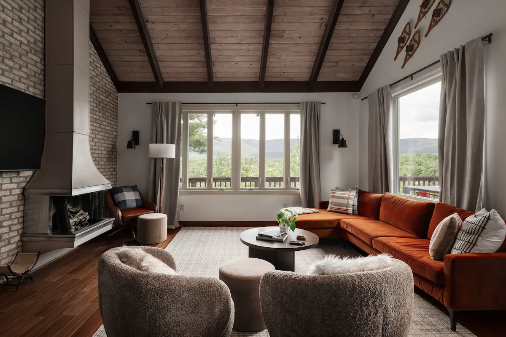

Your stay at Raccoon Chalet.
Arrive easily, settle in, and enjoy your time in Basye.
Find what you need
Check-in4:00 pmEarly arrival by arrangement
Checkout10:00 amPlease be ready to leave on time
Guest support(540) 517-6820Call or text Blue Maple
Find usBasye, Virginia163 Raccoon Rd, 22810
Arrive and settle in.
Your hosts at Blue Maple will text your personal door code on check-in day, usually between 1:00 and 2:00 pm.
- Check-in begins at 4:00 pm. Your code works from then until 10:00 am on checkout day. Ask Blue Maple in advance if you need an earlier arrival.
- To enter, press the Schlage button, enter your four-digit code, wait for the green light, then turn the handle. To leave, close the door and press the lock button.
- Park in the designated driveway spaces. Plan for no more than two vehicles, and contact Blue Maple before bringing another. Roadside parking is not allowed.
- If your code has not arrived or the lock needs help, call or text (540) 517-6820.
Make yourself at home.
- Join the RaccoonChalet Wi-Fi network. For the password, text Blue Maple. Cell service can be spotty here.
- The thermostat is on the main level, just before the game room. Please turn heating or cooling down when the home is empty.
- Fire TVs are available throughout the chalet. Use your own streaming accounts and sign out before checkout.
- The washer and dryer are available for your stay. Clean the dryer’s lint trap before each load.
- The tap water is safe to drink. Only toilet paper goes in the toilets; please keep cooking oil out of the kitchen sink.
Take time to unwind.
Saltwater hot tub
- Shower first. Lift the cover carefully and replace it securely when you finish.
- Use the side controls for temperature, jets, and lights. Leave water-care and salt settings as they are.
- Keep food, glass, soaps, oils, and bath products out of the water. Use plastic drinkware only.
- Children under 12 may not use the hot tub. Supervise older children, keep sessions to 15 to 30 minutes, and stay hydrated.
Outdoor infrared sauna
- Use the control panel inside to set the heat and timer. Allow about 10 to 15 minutes to warm up.
- If you are new to infrared saunas, start with 15 to 20 minutes at 110 to 130°F. Do not set the temperature above 140°F.
- No shoes or food inside. Drink water, stop if you feel lightheaded, then power off and wipe down the bench after use.
- The sauna is not recommended for children or guests with certain medical conditions.
Gather, play, and cook.
- Use the living-room gas fireplace with its remote. If you smell gas, do not light it; contact Blue Maple.
- The propane fire table and grill are for outdoor use only. Follow their controls, close the propane valve after use, and let them cool before covering.
- For movie night, let the popcorn kettle cool before cleaning it, and unplug the machine when finished.
- Pool and ping pong share one table. Lift the ping pong top with two people, keep food and drinks off the felt, and return equipment to the bench storage.
- In the kids' loft, please supervise younger children. The ladder is not bolted in, so no jumping or rough play. Keep food, drinks, and shoes downstairs.
- Use the ski rack and timed boot warmer for gear. Switch the warmer off when you are done.
Care for the chalet and its neighbors.
The home is in the Sky Bryce Mountain Association. These rules help keep the mountain quiet and safe for everyone.
- No pets, indoor smoking, parties, fireworks, ATV use, electric vehicle charging, or discharge of firearms or air guns.
- Quiet hours are 10:00 pm to 7:00 am. Keep outdoor noise low and drive no faster than the posted 25 mph limit.
- Never feed bears or other wildlife. Keep trash inside until it is in a tied bag in a lidded bin.
- Use a screen-covered wood fire pit only when local burning rules permit it. An adult 18 or older must stay outside with the fire throughout. Check current Shenandoah County burning rules before lighting it.
- If you smoke outside, collect and dispose of every cigarette butt. Leave the home and its belongings as you found them.
Know where to find help.
- For an emergency, call 911. If there is a fire, leave by the nearest safe exit, call from a safe place, and do not re-enter until authorities say it is safe.
- The fire extinguisher is on the kitchen counter. The first aid kit is in the hall coat closet by the front door.
- For a power outage, flashlights are above the washer and dryer. Please do not use candles. The breaker panel is in the basement movie-theater area; contact Blue Maple if power has not returned after 30 minutes.
- A Ring doorbell camera is outside at the lower-level entry. There are no interior cameras.
For non-emergency help, call or text Blue Maple at (540) 517-6820.
Leave the next stay ready.
Checkout is at 10:00 am. A departure after 10:00 am carries an $80 late fee, so please arrange any extra time with Blue Maple beforehand.
- Wash the dishes or start the dishwasher. Strip used beds and leave sheets in a pile; place used towels in the bathroom.
- Tie trash in full-size bags. If you leave before Monday, leave the bags in the kitchen for the cleaning team. Otherwise, put them in the lidded cans at the top of the driveway. Never leave loose bags outside.
- Sign out of personal streaming accounts. Turn off lights, heaters, small appliances, and the boot warmer.
- Check for your belongings, close windows, and lock all doors.
This page is a quick reference. Your reservation agreement and instructions from Blue Maple contain the full terms for your stay.
The mountain is yours to explore.
For days beyond the chalet, start with our notes on Bryce Resort, Lake Laura, and the surrounding area.